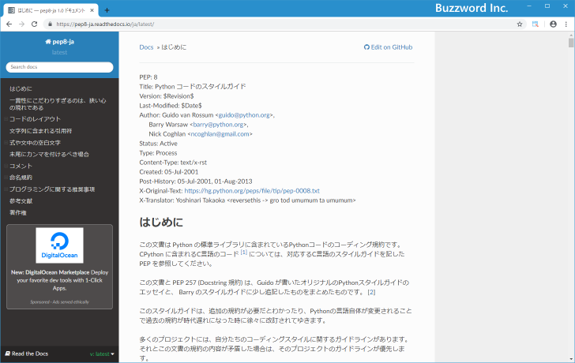

Pythonにおけるインデントを使ったブロックの定義
if 文や for 文では条件式を設定し条件式が真の場合に複数の文を実行させることができます。この時、どこからどこまでの文を実行するのかを示すのがブロックです。他のプログラミング言語ではブロックを { から } までのように定義している場合が多いですが、 Python ではインデントを使ってブロックを表現します。ここでは Python におけるインデントを使ったブロックの定義方法について解説します。
インデントを使ってブロックを定義する
if 文や for 文など内部に別の文を持つ文は複合文と呼ばれます。 while 文や try 文の他に関数の定義やクラスの定義などといったものも複合文です。 if 文では条件式が真の場合に複数の文が実行されますが、どこからどこまでの文を実行するのかを示すのに使われるのがブロックです。
他のプログラミング言語である Java や PHP では { から } までがブロックとなります。
if (条件式) {
ブロック内の処理1
ブロック内の処理2
}
プログラミング言語の Ruby では then から end までがブロックとなります。
if 条件式 then
ブロック内の処理1
ブロック内の処理2
end
それに対して Python では特別な文字を使わずに同じインデントがされている文を同じブロックとして扱います。(インデントとは字下げのことです)。
if 条件式:
ブロック内の処理1
ブロック内の処理2
同じ位置にインデントされている文が同じブロックとして扱われますので、インデントの数がずれていると別のブロックとみなされます。新しいブロックが出てくるべきではないところでインデントが異なる文を書いてしまうとエラーとなってしまいます。
if 条件式:
ブロック内の処理1
ブロック内の処理2
ブロック内の処理3
if 文のブロックの中にさらに if 文がある場合などはインデントをさらにさげて記述します。
if 条件式:
ブロック内の処理1
ブロック内の処理2
if 条件式:
ブロック内の処理1
ブロック内の処理2
if 条件式:
ブロック内の処理1
ブロック内の処理2
ブロック内の処理3
ブロック内の処理4
if 条件式:
ブロック内の処理1
ブロック内の処理2
括弧などを使用せずにインデントだけでブロックを表現するので無駄なコードが含まれずインデントが必ず綺麗に揃うことになります。
インデントの数はいくつにするべきか
インデントはタブまたはスペースで行いますが、スペース何文字分というルールは決まっていませんので例えばスペース 2 文字なら 2 文字で統一して利用されれば問題はないかと思います。迷われた場合は Python のコードを記述する上でスタイルガイドとして PEP: 8 という文書が公開されています。
・PEP 8 -- Style Guide for Python Code

ここでは 1 レベルのインデント毎にスペースを 4 つ使用することを推奨しています。このサイトでもインデントは空白 4 つで統一するようにしています。
-- --
Python におけるインデントを使ったブロックの定義方法について解説しました。
( Written by Tatsuo Ikura )

著者 / TATSUO IKURA
初心者～中級者の方を対象としたプログラミング方法や開発環境の構築の解説を行うサイトの運営を行っています。